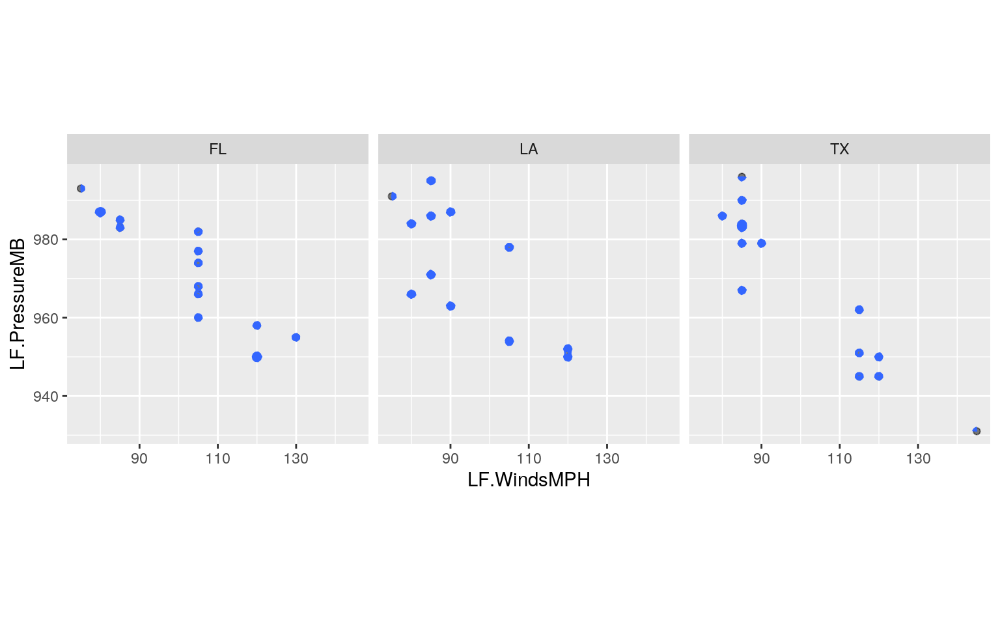
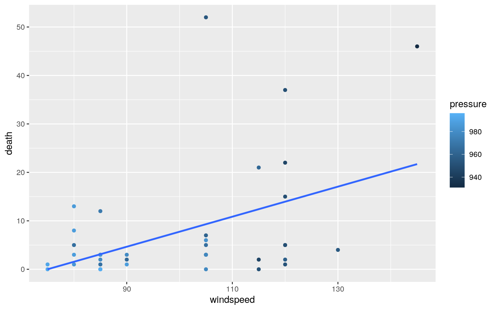
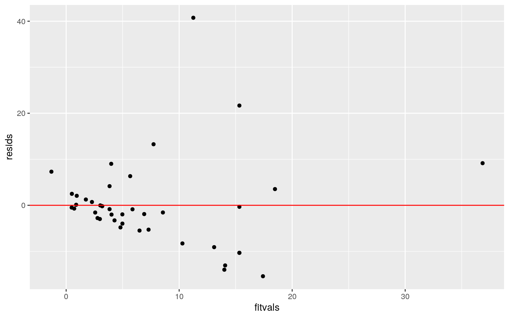
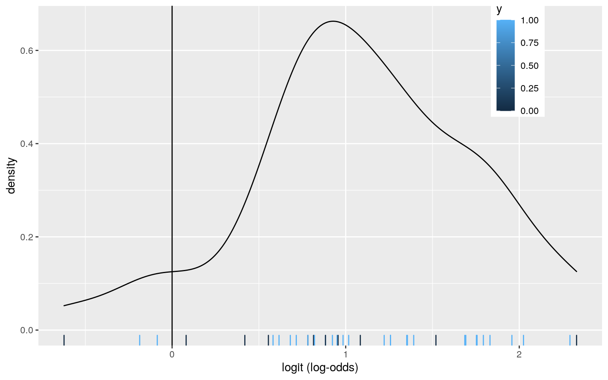
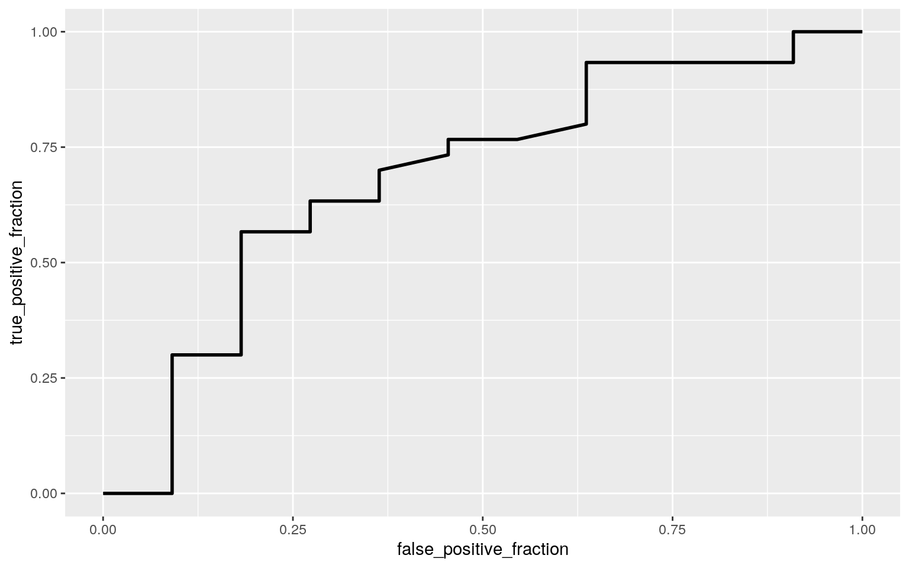
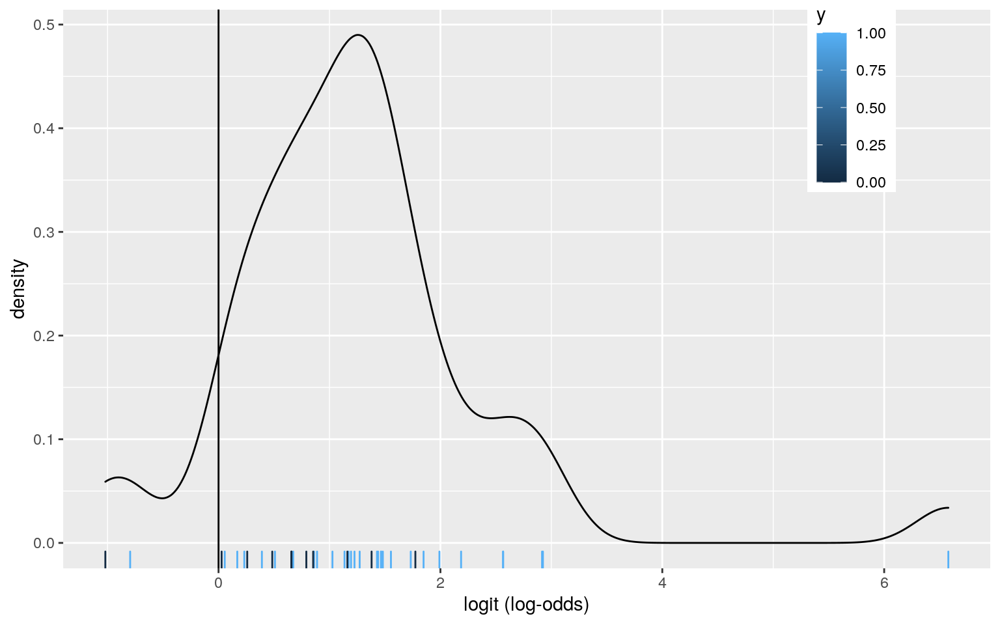
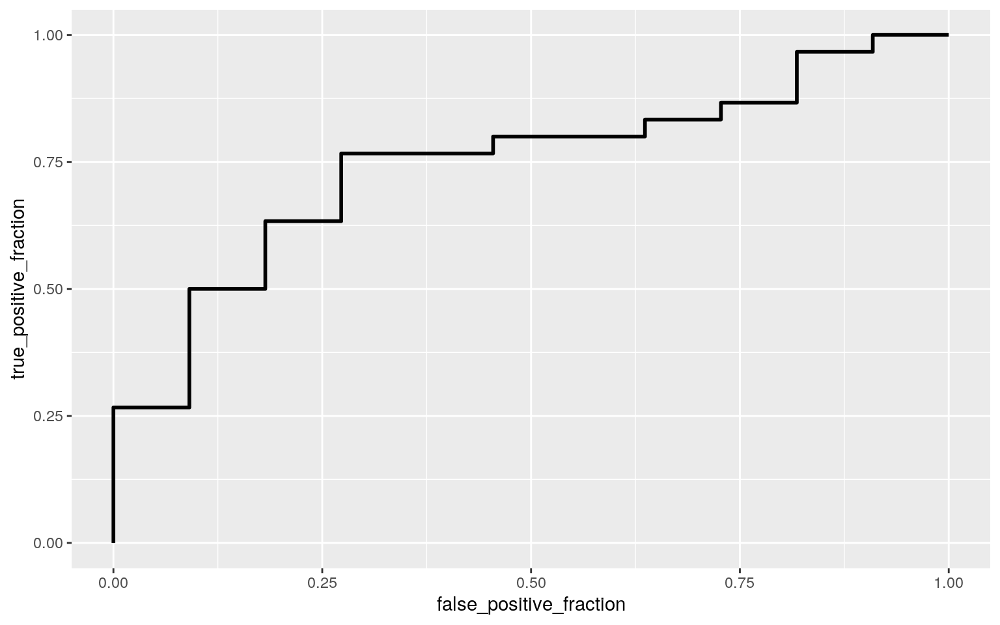

I will be introducing the datatset about US Atlantic hurricanes. The dataset includes 13 different variables such as atmospheric pressure at landfall, estimated damage in millions of dollars, and deaths, for named hurricanes that made landfall in the US mainland from 1950 through to 2012 and the dataset involves 94 different hurricanes (observations). I'm going to look in whether the mean financial damages caused the hurricane differ between LA, TX, and FL. #MANOVA -
library(readr)
library(glmnet)
library(dplyr)
library(mvtnorm)
library(ggExtra)
library(tidyverse)
hurricane <- read_csv("hurricNamed.csv")
hurricane<-hurricane[(hurricane$AffectedStates=="LA" | hurricane$AffectedStates=="TX"|hurricane$AffectedStates=="FL"),]
hurricane2<-hurricane%>%select(Name,mf,AffectedStates,LF.WindsMPH,LF.PressureMB,BaseDam2014,deaths)
#bivariate density plot
ggplot(hurricane2, aes(x = LF.WindsMPH, y = LF.PressureMB,z=BaseDam2014)) +geom_point(alpha = .5) + geom_density_2d(h=2) + coord_fixed() + facet_wrap(~AffectedStates)
#equal variance
covmats<-hurricane2%>%group_by(AffectedStates)%>%do(covs=cov(.[4:7]))
for(i in 1:3){print(as.character(covmats$AffectedStates[i])); print(covmats$covs[[i]])}## [1] "FL"
## LF.WindsMPH LF.PressureMB BaseDam2014 deaths
## LF.WindsMPH 291.666667 -226.54762 46063.004 9.642857
## LF.PressureMB -226.547619 211.23810 -61334.220
-10.285714
## BaseDam2014 46063.003775 -61334.21962 47698547.868
5903.746388
## deaths 9.642857 -10.28571 5903.746 5.171429
## [1] "LA"
## LF.WindsMPH LF.PressureMB BaseDam2014 deaths
## LF.WindsMPH 237.8788 -182.5758 2684.017 127.5758
## LF.PressureMB -182.5758 254.8106 -13813.973 -172.0379
## BaseDam2014 2684.0172 -13813.9731 2332865.319 18592.8787
## deaths 127.5758 -172.0379 18592.879 289.7197
## [1] "TX"
## LF.WindsMPH LF.PressureMB BaseDam2014 deaths
## LF.WindsMPH 410.9890 -385.1648 18787.60 199.1758
## LF.PressureMB -385.1648 414.6813 -16738.77 -163.7473
## BaseDam2014 18787.5994 -16738.7733 2008370.22 12974.9098
## deaths 199.1758 -163.7473 12974.91 169.0330#Shapiro tests
hurricane2 %>%group_by(AffectedStates) %>%summarise(statistic = shapiro.test(LF.WindsMPH)$statistic, p.value = shapiro.test(LF.WindsMPH)$p.value)## # A tibble: 3 x 3
## AffectedStates statistic p.value
## <chr> <dbl> <dbl>
## 1 FL 0.905 0.115
## 2 LA 0.866 0.0575
## 3 TX 0.810 0.00664hurricane2 %>%group_by(AffectedStates) %>%summarise(statistic = shapiro.test(LF.PressureMB)$statistic, p.value = shapiro.test(LF.PressureMB)$p.value)## # A tibble: 3 x 3
## AffectedStates statistic p.value
## <chr> <dbl> <dbl>
## 1 FL 0.927 0.242
## 2 LA 0.923 0.315
## 3 TX 0.929 0.295hurricane2 %>%group_by(AffectedStates) %>%summarise(statistic = shapiro.test(BaseDam2014)$statistic, p.value = shapiro.test(BaseDam2014)$p.value)## # A tibble: 3 x 3
## AffectedStates statistic p.value
## <chr> <dbl> <dbl>
## 1 FL 0.559 0.0000110
## 2 LA 0.779 0.00542
## 3 TX 0.749 0.00124hurricane2 %>%group_by(AffectedStates) %>%summarise(statistic = shapiro.test(deaths)$statistic, p.value = shapiro.test(deaths)$p.value)## # A tibble: 3 x 3
## AffectedStates statistic p.value
## <chr> <dbl> <dbl>
## 1 FL 0.951 0.543
## 2 LA 0.610 0.000129
## 3 TX 0.731 0.000787#manova
man1<-manova(cbind(LF.WindsMPH,LF.PressureMB,BaseDam2014,deaths)~AffectedStates, data=hurricane2)
summary(man1)## Df Pillai approx F num Df den Df Pr(>F)
## AffectedStates 2 0.28768 1.512 8 72 0.1682
## Residuals 38A one-way MANOVA was conducted to determine the effect of the states (LA,TX,FL) on four different dependent variables (windspeed of the hurricane, atmospheric pressure of the hurricane, property damage, and the number of deaths). Examination of bivariate density plots for each group revealed no stark deparures from multivariate normality. Examination of covariance matrices performing Shapiro test for each group revealed, we reject the null hypothesis that all population variances/covariances are equal across groups because the p-values were <0.05. Assumption is violated. MANOVA is not considered to be an appropriate analysis technique but i continued for the project. MANOVA test result revealed that the significant differences were not found among the three states.(F=1.512, p=0.1682, df=2). Because MANOVA indicated that there was not significant difference, post hoc was not necessary.
#rename-organizational purpose
hurricane2 <- rename(hurricane2, states = 3)
hurricane2 <- rename(hurricane2, windspeed = 4)
hurricane2 <- rename(hurricane2, pressure = 5)
hurricane2 <- rename(hurricane2, damage = 6)
hurricane2 <- rename(hurricane2, death = 7)hurricane2%>%group_by(mf)%>%summarize(means=mean(damage))%>%summarize(`mean_diff`=diff(means))## # A tibble: 1 x 1
## mean_diff
## <dbl>
## 1 -1100.rand_dist<-vector()
for(i in 1:5000){
new<-data.frame(damage=sample(hurricane2$damage),mf=hurricane2$mf)
rand_dist[i]<-mean(new[new$mf=="f",]$damage)- mean(new[new$mf=="m",]$damage)}
mean(rand_dist>1100.367 | rand_dist < -1100.367) ## [1] 0.563Test statistic is that the female hurricanes have caused more financial property damage than the male hurricanes. The null hypothesis is that there's is no difference in financial property damage caused between the female hurricanes and the male hurricanes. After performing a randomization test to see whether there much higher damage caused by the female hurricane than themale hurricane, we found apvalue of 0.55 and we failed to reject H0!there is no difference in damage between female and male hurricane according to the randomization test.
Controlling wind speed of the hurricane and the atmospheric pressure of the hurricane at a time, the linear regression was conducted to investigate whether either variable and the interaction between the two variable expains the variation in the number of deaths caused by the hurricane.
library(tidyverse)
library(sandwich)
library(lmtest)
#Linear regression
fit<-lm(death ~ windspeed * pressure, data=hurricane2)
summary(fit)##
## Call:
## lm(formula = death ~ windspeed * pressure, data =
hurricane2)
##
## Residuals:
## Min 1Q Median 3Q Max
## -15.415 -3.978 -0.842 2.062 40.748
##
## Coefficients:
## Estimate Std. Error t value Pr(>|t|)
## (Intercept) -7.839e+02 5.759e+02 -1.361 0.1817
## windspeed 1.165e+01 5.469e+00 2.130 0.0399 *
## pressure 8.221e-01 5.911e-01 1.391 0.1726
## windspeed:pressure -1.210e-02 5.681e-03 -2.130 0.0399 *
## ---
## Signif. codes: 0 '***' 0.001 '**' 0.01 '*' 0.05 '.' 0.1
' ' 1
##
## Residual standard error: 10.03 on 37 degrees of freedom
## Multiple R-squared: 0.355, Adjusted R-squared: 0.3027
## F-statistic: 6.787 on 3 and 37 DF, p-value: 0.0009248#Graph
ggplot(hurricane2,aes(windspeed, death,color=pressure))+geom_point()+ geom_smooth(method = "lm", se = F, fullrange = T)
#Assumptions(linearityandhomoskedasticity)
resids<-fit$residuals
fitvals<-fit$fitted.values
ggplot()+geom_point(aes(fitvals,resids))+geom_hline(yintercept=0, col="red")
bptest(fit)##
## studentized Breusch-Pagan test
##
## data: fit
## BP = 5.527, df = 3, p-value = 0.137#Assumption(normality)
ks.test(resids, "pnorm", sd=sd(resids))##
## One-sample Kolmogorov-Smirnov test
##
## data: resids
## D = 0.17993, p-value = 0.1406
## alternative hypothesis: two-sided#Correcting SE
summary(fit)$coef[,1:2]## Estimate Std. Error
## (Intercept) -783.93060607 5.759170e+02
## windspeed 11.64745938 5.469174e+00
## pressure 0.82210224 5.911186e-01
## windspeed:pressure -0.01210029 5.680837e-03coeftest(fit, vcov=vcovHC(fit))[,1:2]## Estimate Std. Error
## (Intercept) -783.93060607 1.099297e+03
## windspeed 11.64745938 1.058959e+01
## pressure 0.82210224 1.125332e+00
## windspeed:pressure -0.01210029 1.089461e-02The result of the Linear regression indicates that the windspeed of the hurricane explains that the variation in the number of death when the atmospheric pressure is controlled. When the values for windspeed and pressure is zero, the number of deaths is -7.839e+02 which is non realistic since there's no hurricane with zero windspeed and atmospheric pressure. For every unit increase in the windspeed, the number of death goes up by 1.165e+01 with zero pressure and zero winspeed and pressure interaction. With every unit increase in the interaction between windspeed and pressure, the number of deaths goes down by -1.210e-02. The Linear Regression explains interaction of (number of death) = (-7.839e+02) + 1.165e+01(windspeed) + 8.221e-01(pressure) + (pressure*windspeed).
Neverthe less, the residual plot shows that the linearity and homoskedasticity assumptions might have been failed because the residual plot shows the patterns across the scatterplot.However, the studentized Breusch-Pagan test showed big p-value which indicates that we failed to reject the null hypothesis that variances are all equal. One-sample Kolmogorov-Smirnov test also showed that the normality assumption has been failed to reject because it showed a big p value.Thus we passed the normality test.
If we were to compare the compare the number of deaths controlling the windspeed and the atmospheric pressure after the Standard error is corrected even though the homospkedasity assumption test has not been failed, the SE becomes bigger than when the SE are not corrected. Bigger SE makes it more difficult to reject the null hypothesis.
#SE
boot_dat<- sample_frac(hurricane2, replace=T)
samp_distn<-replicate(5000, {
boot_dat <- sample_frac(hurricane2, replace=T)
fit <- lm(death~windspeed+pressure, data=boot_dat)
coef(fit)
})
samp_distn %>% t %>% as.data.frame %>% summarize_all(sd)## (Intercept) windspeed pressure
## 1 230.2121 0.1922022 0.219856#Bootstrap Confidence Intervals
samp_distn %>% t %>% as.data.frame %>% pivot_longer(1:3) %>% group_by(name) %>%
summarize(lower=quantile(value,.025), upper=quantile(value,.975))## # A tibble: 3 x 3
## name lower upper
## <chr> <dbl> <dbl>
## 1 (Intercept) 15.4 908.
## 2 pressure -0.884 -0.0329
## 3 windspeed -0.446 0.330The Bootstrapped SEs are calculated to be smaller than the robust SEs. When looking at the confidence interval, the CI interval for varible windspeed contains the a '0' for a plausible value. Thus, it can't reject the null hypothesis.
data<-hurricane2%>%mutate(y=ifelse(mf=="f",1,0))
fit2<-lm(y~windspeed+pressure,data=data)
summary(fit2)##
## Call:
## lm(formula = y ~ windspeed + pressure, data = data)
##
## Residuals:
## Min 1Q Median 3Q Max
## -0.9645 -0.4082 0.2130 0.2929 0.5094
##
## Coefficients:
## Estimate Std. Error t value Pr(>|t|)
## (Intercept) -13.006792 8.835836 -1.472 0.1492
## windspeed 0.013926 0.007971 1.747 0.0887 .
## pressure 0.012734 0.008388 1.518 0.1372
## ---
## Signif. codes: 0 '***' 0.001 '**' 0.01 '*' 0.05 '.' 0.1
' ' 1
##
## Residual standard error: 0.4428 on 38 degrees of freedom
## Multiple R-squared: 0.07435, Adjusted R-squared: 0.02563
## F-statistic: 1.526 on 2 and 38 DF, p-value: 0.2304fit2<-glm(y~windspeed+pressure,data=data, family="binomial")
coef(fit2)## (Intercept) windspeed pressure
## -71.13972572 0.07376932 0.06688997exp(coef(fit2))## (Intercept) windspeed pressure
## 1.271773e-31 1.076558e+00 1.069178e+00#confusion matrix
logistic<-function(x){exp(x)/(1+exp(x))}
data$prob <- predict(fit2,type="response")
data$predicted <- ifelse(data$prob>.5,"female","male")
table(predict=as.numeric(data$prob>.5),truth=data$y)%>%addmargins## truth
## predict 0 1 Sum
## 0 1 2 3
## 1 10 28 38
## Sum 11 30 41#sensitivity (TPR)
mean(data[data$y==1,]$prob>.5)## [1] 0.9333333#specificity (TNR)
mean(data[data$y==0,]$prob<.5)## [1] 0.09090909#precision
28/38## [1] 0.7368421data$logit<-predict(fit2,type="link")
## Density plot of log-odds for each outcome:
data%>%ggplot()+geom_density(aes(logit,color=y,fill=y), alpha=.4)+
theme(legend.position=c(.85,.85))+geom_vline(xintercept=0)+xlab("logit (log-odds)")+
geom_rug(aes(logit,color=y))
#ROC curves
library(plotROC)
ROCplot<-ggplot(data)+geom_roc(aes(d=y,m=prob), n.cuts=0)
ROCplot
calc_auc(ROCplot)## PANEL group AUC
## 1 1 -1 0.6878788After performing a linear regression to investigate whether the windspeed of the hurricane and the atmospheric pressure explains that the variation in gender of the hurricane when the other variable is controlled, the big p values indicated that none of the values has significant influence on the gender of the hurricane. With zero value of windspeed and pressure, the likeliness of hurricane to be female is 71.14. Controlling the pressure (zero pressure), for every one mile per hour increase decreases the predicted probability for hurricane to be female by 0.07376932. With controlled windspeed of 0, every one increase in milibar of the pressure decreases the predicted probability for hurricane to be a female by 0.06688997. Sensitivity is 0.93. TNR is 0.09. Precision is 0.737. AUC was calculated to be 0.69 which indicates that the curve is not so good at guessing the data.
data2<-hurricane2%>%mutate(y=ifelse(mf=="f",1,0))
fit3<-lm(y~windspeed+pressure+damage+death+states,data=data2)
summary(fit3)##
## Call:
## lm(formula = y ~ windspeed + pressure + damage + death +
states,
## data = data2)
##
## Residuals:
## Min 1Q Median 3Q Max
## -0.8827 -0.3149 0.1899 0.2635 0.6180
##
## Coefficients:
## Estimate Std. Error t value Pr(>|t|)
## (Intercept) -1.526e+01 1.038e+01 -1.470 0.151
## windspeed 1.362e-02 8.882e-03 1.533 0.134
## pressure 1.504e-02 9.868e-03 1.524 0.137
## damage 1.737e-05 1.913e-05 0.908 0.370
## death 4.954e-04 7.342e-03 0.067 0.947
## statesLA -9.013e-02 2.001e-01 -0.451 0.655
## statesTX 9.468e-02 1.880e-01 0.504 0.618
##
## Residual standard error: 0.4563 on 34 degrees of freedom
## Multiple R-squared: 0.1206, Adjusted R-squared: -0.03461
## F-statistic: 0.777 on 6 and 34 DF, p-value: 0.5936fit3<-glm(y~windspeed+pressure+damage+death+states,data=data2, family="binomial")
coef(fit3)## (Intercept) windspeed pressure damage death statesLA
statesTX
## -96.477466714 0.080429146 0.091879528 0.000245846
-0.004169439 -0.307684663 0.682698965exp(coef(fit3))## (Intercept) windspeed pressure damage death statesLA
statesTX
## 1.259994e-42 1.083752e+00 1.096233e+00 1.000246e+00
9.958392e-01 7.351471e-01 1.979212e+00 #confusion matrix
logistic<-function(x){exp(x)/(1+exp(x))}
data2$prob <- predict(fit3,type="response")
data2$predicted <- ifelse(data2$prob>.5,"female","male")
table(predict=as.numeric(data2$prob>.5),truth=data2$y)%>%addmargins## truth
## predict 0 1 Sum
## 0 1 1 2
## 1 10 29 39
## Sum 11 30 41#sensitivity (TPR)
mean(data2[data2$y==1,]$prob>.5)## [1] 0.9666667#specificity (TNR)
mean(data2[data2$y==0,]$prob<.5)## [1] 0.09090909#precision
30/41## [1] 0.7317073data2$logit<-predict(fit3,type="link")
# Density plot of log-odds for each outcome:
data2%>%ggplot()+geom_density(aes(logit,color=y,fill=y), alpha=.4)+
theme(legend.position=c(.85,.85))+geom_vline(xintercept=0)+xlab("logit (log-odds)")+
geom_rug(aes(logit,color=y))
#ROC curves
library(plotROC)
ROCplot<-ggplot(data2)+geom_roc(aes(d=y,m=prob), n.cuts=0)
ROCplot
calc_auc(ROCplot)## PANEL group AUC
## 1 1 -1 0.7454545#LASSO
library(glmnet)
library(nnet)
set.seed(1234)
k=5
data <- data2 %>% sample_frac
folds <- ntile(1:nrow(data),n=10)
class_diag <- function(probs,truth){
#CONFUSION MATRIX: CALCULATE ACCURACY, TPR, TNR, PPV
tab<-table(factor(probs>.5,levels=c("FALSE","TRUE")),truth)
acc=sum(diag(tab))/sum(tab)
sens=tab[2,2]/colSums(tab)[2]
spec=tab[1,1]/colSums(tab)[1]
ppv=tab[2,2]/rowSums(tab)[2]
f1=2*(sens*ppv)/(sens+ppv)
if(is.numeric(truth)==FALSE & is.logical(truth)==FALSE) truth<-as.numeric(truth)-1
#CALCULATE EXACT AUC
ord<-order(probs, decreasing=TRUE)
probs <- probs[ord]; truth <- truth[ord]
TPR=cumsum(truth)/max(1,sum(truth))
FPR=cumsum(!truth)/max(1,sum(!truth))
dup<-c(probs[-1]>=probs[-length(probs)], FALSE)
TPR<-c(0,TPR[!dup],1); FPR<-c(0,FPR[!dup],1)
n <- length(TPR)
auc<- sum( ((TPR[-1]+TPR[-n])/2) * (FPR[-1]-FPR[-n]) )
data.frame(acc,sens,spec,ppv,f1,auc)
}None of the variables were found to show significantly influecial in determining probabilty of being a female or male. The sensitivity was found to be 0.97. Thes Specificity was found to be 0.09. The precision was found to be 0.73. The AUC was calculated to be 0.75 which indicates that the the curve is not so terrible at guessing the data but not very good at the same time. ...